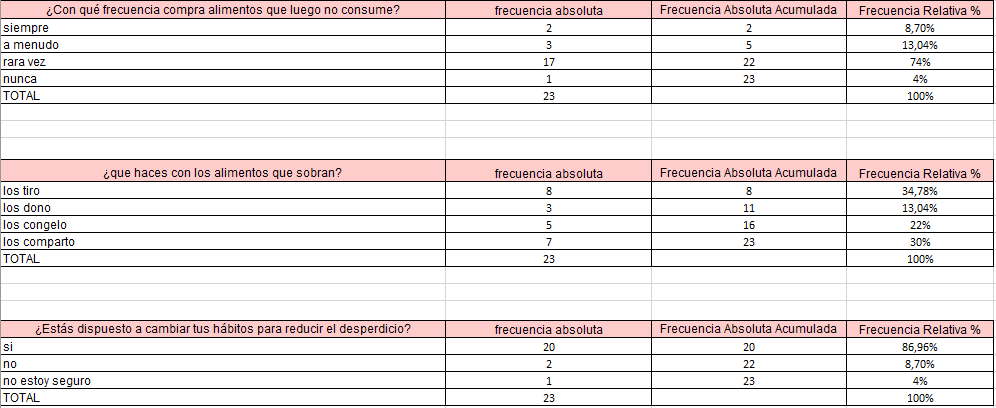
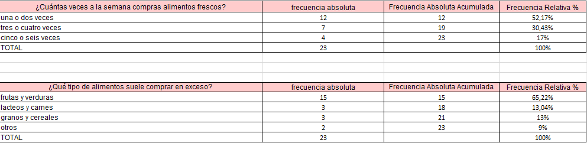
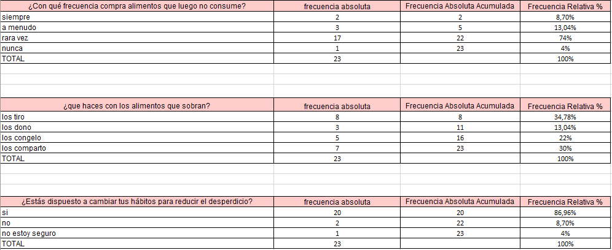
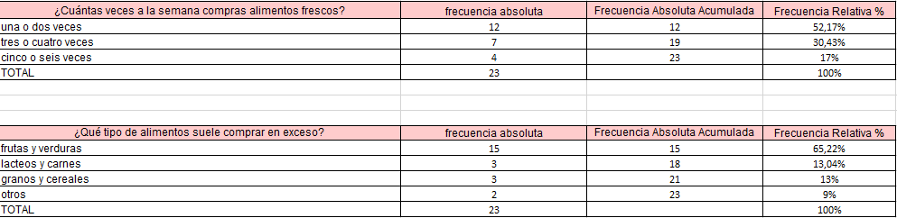

Biología-quimica
Diseño inicial del prototipo
El proyecto de aprovechamiento de residuos orgánicos en el Colegio Parroquial San Juan Bautista busca reducir el desperdicio de alimentos mediante la generación de biogás y compost. A continuación, se presentan los aspectos clave del diseño del prototipo.
Materiales y recursos necesarios
- Biodigestor para la producción de biogás.
- Contenedores de separación de residuos orgánicos.
- Área destinada para el compostaje.
- Medidores de pH y temperatura para el monitoreo del biodigestor.
- Termómetros y estructuras para control de condiciones en el compostaje.
Funcionalidades del prototipo
El sistema diseñado cumple con las siguientes funciones:
- Transformar residuos orgánicos en biogás, reduciendo la dependencia de combustibles fósiles.
- Producir compost para enriquecer el suelo del colegio y disminuir el uso de fertilizantes químicos.
- Reducir las emisiones de gases de efecto invernadero generadas por la descomposición anaeróbica en vertederos.
- Fomentar la educación ambiental y la participación de los estudiantes en prácticas sostenibles.
Costos
El presupuesto estimado del proyecto incluye:
- Construcción del biodigestor: Variable según el tamaño y materiales utilizados.
- Compra de medidores de pH, termómetros y materiales para compostaje.
- Capacitación del personal y estudiantes para la correcta gestión del sistema.
Evaluación de la eficacia del prototipo
Para garantizar el funcionamiento adecuado del prototipo, se realizan pruebas para evaluar su rendimiento y efectividad:
- Monitoreo del porcentaje de materia orgánica convertida en biogás.
- Medición del pH y la relación carbono/nitrógeno en el compostaje.
- Tiempo requerido para la producción de biogás y maduración del compost.
- Evaluación de la composición del biogás generado (CH₄ y CO₂).
Ajustes y optimización
Según los datos recogidos, se realizan mejoras en el prototipo para optimizar su eficiencia, como:
- Control de temperatura y presión en el biodigestor para evitar fugas de metano.
- Optimización de la humedad y aireación en el compostaje para evitar malos olores y proliferación de insectos.
- Refuerzo en la capacitación de los estudiantes sobre separación adecuada de residuos.
Métodos analíticos para evaluar impacto ambiental
Se aplican diversos métodos para medir la sostenibilidad del proyecto:
- Medición de la reducción de residuos orgánicos enviados a vertederos.
- Evaluación de la cantidad de biogás producido y su aprovechamiento en la cocina escolar.
- Análisis de la composición química del compost generado.
- Medición de residuos no biodegradables mal separados.
Consideraciones adicionales
Para asegurar la viabilidad del proyecto a largo plazo, se deben considerar aspectos como:
- Capacitación continua para estudiantes y personal sobre manejo de residuos y mantenimiento del biodigestor.
- Seguimiento de normativas ambientales locales para la correcta implementación del sistema.
- Desarrollo de campañas de concienciación para fomentar la participación activa de la comunidad educativa.
- Evaluación periódica del impacto ambiental y social del proyecto para mejorar su implementación.
Conclusión
El proyecto demuestra que es posible reducir el impacto ambiental del colegio al aprovechar los residuos orgánicos de manera eficiente. Sin embargo, su éxito dependerá del manejo adecuado de los procesos, la educación continua de los estudiantes y el monitoreo constante de indicadores químicos. La implementación de estas estrategias convierte al colegio en un modelo de sostenibilidad y educación ambiental.
 


